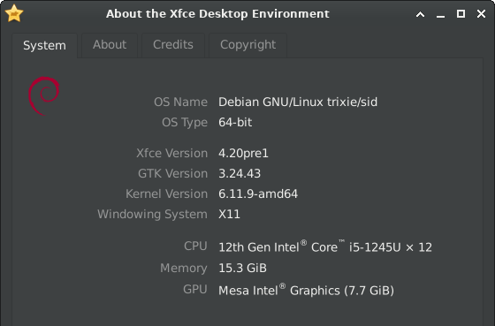

Dec 15,2024
Xfce 4.20 released
After almost two years of work, we are happy to announce the release of Xfce 4.20.
Since Xfce 4.18 a lot of major development happened. Our team added many nice new features, did a gazillion of bug fixes and did various minor improvements. Finally, all that was released for your pleasure.
The major focus during this development cycle was the preparation of the codebase to be ready for Wayland. So that we meanwhile have experimental Wayland support for most components. More details in the 'Wayland' section below.
Assuming you have installed Xfce 4.18, here an overview on the major changes you will see on an upgrade to Xfce 4.20.
General
Wayland
Important Notice: Please be aware that the Wayland support in Xfce 4.20 is experimental. It is recommended for advanced users only, as you may encounter bugs and experience incomplete functionality. Proceed with caution!
Thanks to Brian and Gaël almost all Xfce components are able to run on Wayland windowing, while still keeping support for X11 windowing.
This major effort was achieved by abstracting away any X11/Wayland windowing specific calls and making use of Wayland/Wlroots protocols. A whole new Xfce library, "libxfce4windowing" was introduced during that process. XWayland will not be required to run any of the ported Xfce components.
So far Xfce does not feature a compositor which supports Wayland. If you want to run Xfce in Wayland, Labwc and Wayfire will give you the best results. A detailed instruction on this can be found here. Please be aware that Wayland support is still experimental!
Plans are underway to add Wayland support to Xfwm4 while preserving its existing X11 functionality. However, such a restructurization will be a major effort and we cannot tell yet when/if it will be done, so please don't hold your breath waiting for it.
For few components and multiple features, it was not possible to port them to Wayland, partly because there are no standardized Wayland protocols available yet to provide the required services:
- Workspace support is missing (ext-workspace protocol was just merged).
- Systray icons will be missing for multiple applications (required to use StatusNotifier instead of GtkStatusIcon)
- Xfce4-settings: Keyboard and mouse settings so far are internal to the Wayland compositor and as such the according Xfce dialogs won't be available on Wayland yet.
- Power related keyboard handling (brightness keys, suspend, etc.) is internal to the Wayland compositor and as such cannot be supported yet by Xfce components.
- Wayland does not specify a native protocol for taking screenshots. However, xfce4-screenshooter already supports screenshots via the wlroots 'screencopy' protocol (entire screen). Screenshots of a rectangle selection or the active window are not yet supported via Wayland.
Some other Xfce components don't run at all on Wayland:
- Xfwm4
- Xfdashboard
- Xfce4-screensaver (porting to Wayland completed but not merged, as it requires the experimental libwlembed library)
- Xfce4-windowck-plugin (needs to be ported to libxfce4windowing)
- Xfce4-xkb-plugin (keyboard handling is internal to the Wayland compositor)
More detailed info on the current Wayland status can be found on our Wayland roadmap.
@Gael, @Brian: In this section probably many things are not correct or missing. Please just open a MR or send me diffs to modify this section according to your needs. (Should we add any pictures?) I suppose we should bring https://wiki.xfce.org/releng/wayland_roadmap#testing up to date, to show how to test things in a good way.
Scaling
Icons and thumbnail scaling was fixed for various components. Various missing icons for larger scales were added. Any blurriness when using Xfce components on a HiDPI display should be gone now.
exo
Icon View Performance
By using different container types, the "Exo-Icon-View" now can handle 100,000 files and more without freezing.
Type ahead search box
The type ahead search box in the exo icon view now always stays inside the according view widget.
libxfce4ui
Shortcut Editor
Shortcuts now can be used for multiple actions if they don't conflict with each other.
About Dialog
The dialog now shows the distribution logo, information about the used windowing system and the used GPU.
libxfce4windowing
This library is new to Xfce. Libxfce4windowing is an abstraction library that attempts to present windowing concepts (screens, top level windows, workspaces, etc.) in a windowing-system-independent manner.
Currently, X11 is fully supported via libwnck. Wayland is partially supported by using various Wayland protocol extensions. However, the full range of operations available on X11 is not available on Wayland, due to missing features in these protocols extensions.
thunar
Mounted and Remote Locations
Mount points now show an emblem and have a specific type description.
Ipv6 remote URLs are now supported.
It is now possible to create symbolic links as well on remote locations./p>
Search
It is not required any more to wait until a search is finished to open the context menu on search results.
Toolbar
A couple of new toolbar buttons were added:
- View Switcher - A drop-down button to select a view.
- Menu - This hamburger button will show automatically in the toolbar, when the menubar is hidden. It will reveal a vertical menu, bar, when pressed.
- New Tab - Open a new tab using the current directory.
- New Window - Open a new window using the current directory.
On shrinking the Thunar window, toolbar items will now be moved to an overflow menu. Like that, it is possible to maintain smaller thunar windows.
Furthermore, a bug was fixed which prevented the usage of submenu custom actions in the toolbar.
Window Decorations
There is now an option to use client side decorations in Thunar (CSD).
Statusbar
An option to show the number of hidden files in the statusbar was added.
Recently Used Files
Only files which were successfully opened are now added to the list of recently used files.
Directories won't be added to the recently used files anymore.
Symbolic Icons
There is now an option to use symbolic icons in the side pane and colored icons in the toolbar.
Drag and Drop
While dragging files, folders are now opened automatically on hover.
While dragging files, the focus of the split view pane is now updated when hovered.
Performance
In the past, you might have faced situation involving bigger numbers of files in which thunar showed a freeze. Due to various different performance measures, thunar now is much more bullet-proof for action involving huge numbers of files.
This was achieved by using appropriate container types, moving some actions into separate jobs and throttling of view-updates.
A number of integration test cases will be used in order to keep performance on the current level in the future.
Custom Actions
Shortcuts for custom action will now as well work when the custom action is located in a sub-menu.
File Transfer
For file validation in thunar 4.18.x a md5 checksum was calculated for source and target file. This calculation turned out to be rather slow and actually superfluous. Now files are just compared directly. In addition, the usage of direct I/O operations now attempts to prevent comparison of possibly cached buffers.
An option was added to only copy files in parallel if the relevant devices are in idle state. This prevents possible fragmentation during copy for HDD drives.
Transferring files no longer steals the current focus.
The file transfer question dialog now provides the same options while having less buttons. In addition, file thumbnails now are properly requested by the dialog.
Launchers
By default, launcher names instead of filenames are shown now for trusted launchers.
Undo/Redo
The user now will be asked before any deletion will be done by an undo operation.
List View
Similar to the tree-view side pane, the main view now also supports folder expansion.
Split View
A shortcut now can be used to toggle between split-view panes, and the focused pane now uses different coloring.
A dialog will now ask for confirmation when closing a split-pane with multiple tabs.
xfce4-appfinder
The application list now as well can be navigated via Ctrl+N / Ctrl+P keys (VI default).
An option was added to close the Appfinder window automatically when focus is lost.
Ctrl+Enter can be used to execute commands immediately when selecting entries from the dropdown.
Within the new version, application specific actions will show on right click.
An option to show generic names of launchers was added.
Appfinder optionally can now be launched as a daemon, so that it will respond even quicker.
An option allows now to launch items on a single click.
xfce4-panel
General
The border width of the panel is now configurable.
For manual installations: the panel now does its best to find plugins in XDG base directories, and better preserves its configuration when it can't find them.
Clock
LCD clock: An option was added to visualize inactive segments.
Analog: There is now an optional 24h mode.
Digital: Week numbers now are shown optionally.
Show Desktop
There is now the possibility to show the desktop when hovering the mouse on the "show desktop" panel icon.
Tasklist
Icon size management has been improved overall, notably by switching to libxfce4windowing.
Preferences
The 'delete' key can now be used to remove panel objects, and several objects can be removed at once.
Panel objects in the panel configuration list now will have the same icons as in the panel itself.
xfce4-power-manager
Screen Locking
There is no dedicated "security" tab anymore. Lock screen management was massively simplified and "Light Locker" was dropped. "lock-on-sleep" is now synchronized with xfce4-session and xfce4-screensaver.
Screen locking settings are now only handled by xfce4-screensaver to avoid conflicts. A button to open xfce4-screensaver-preferences was added:
Power Settings
Support for handling different power profiles via power-profiles-daemon was added.
The overall charge state calculation was wrong for some cases and is now fixed.
When the critical power dialog pops up, unintentional user actions are now prevented.
There is now support for the hybrid sleep mode.
The device details tab now as well shows the energy rate.
Others
Several use-cases for lid close were fixed.
There are now the options "shutdown" and "do nothing" on lid close.
Buttons to change the brightness exponentially and keyboard backlight toggle keys now are supported.
xfce4-session
The logout dialog will not provide a checkbox to enable session saving anymore.
It is now possible to start a Wayland session via 'startxfce4 --wayland'.
Minimal support for xdg-desktop-portal was added by registering for a wallpaper, screenshot and background xapp.
xfce4-settings
Appearance Settings
Icon themes are now loaded in a separate thread, in order to prevent a possible freeze.
For icon themes which are known to be incomplete, a warning now will be shown.
The usage of client side decorations is opt-in now, not opt-out.
Dark themes now are identified and supported in a more reliable way. (Relevant e.g. for the Qogir and Orchis themes)
´Display Settings
The default display profile has been added to the list of profiles that can match, and will be used if more than one matches now.
Profile management has been extended to all profiles, not just those that match, and their names can now be edited.
Scaling now always is done for both dimensions, and the preview shows the resulting size.
Mirror state management has been improved overall, in particular by removing the need to match refresh rates.
The minimal dialog has been improved, in particular by allowing the display to be extended to the left and from top to bottom, and with compact profile display.
Mouse Settings
A checkbox was added to toggle between adaptive and flat mouse accel profile.
High resolution scrolling can now be enabled for mice which do support it.
Mime Settings
It is now possible to select/change multiple items at once.
xfconf
A systemd user unit, corresponding to the D-Bus session service, is now added.
Whitespaces are now properly escaped when writing a xfconf channel to disk.
Xfconf-query now displays array contents.
xfdesktop
Background Management
For random wallpaper cycling, wallpapers now are only repeated after all other wallpapers were shown.
Old Xfce backgrounds were ported from .png to .svg to be usable for large screens.
Gradients will now be rendered in a gamma-correct way.
Icon grid
The confirmation dialog for arranging desktop icons now is optional.
It is now possible to set custom colors for icon labels and icon background.
The icon grid on each monitor is now independent of one another.
Minimized Application Icons
Window icons are now initially shown on the monitor where the window was present before being minimized.
The context menu (when clicking on an empty space) now has more useful options than before.
File Icons
There is now an option to sort folders before files.
The positions of the icons are now saved in a way that should avoid icons moving around in unexpected ways when monitors are added and removed.
New files and dropped files now will be placed near the current cursor location.
Icons of fixed disks and drives can now be optionally shown.
Preferences
The 'Desktop Icons' tab was fully reworked.
All shortcuts of Xfdesktop now can be configured, using the XfceShortcutsManagers widget.
More folders that hold background images were added as shortcuts in the settings dialog.
The settings dialog will update if the background is changed from outside the dialog.
Wallpaper image folders now are loaded fully asynchronously to prevent lag.
Context Menu
Cascading custom actions will now as well shown correctly in Xfdesktop.
It is now possible to open multiple selected folders at once.
The context menu now opens on button press rather than button release, as most users will expect.
The middle-click window list menu has new styling and added features.
xfwm4
@ofourdan: I have little to no idea about the changes on xfwm4 and cannot rate which of them could be relevant for the tour. It would be great if you could write few words, if there are things which could be relevant for the end-user. Below the items from the changelog:
Support for stretch theme variants
compositor: Block softpipe for GLX vsync
focus: Include skip taskbar/pager when passing focus
add missing break to fix crash when alt-tabbing (#762)
screen: Fix uninitialized rect in myScreenGetXineramaMonitorGeometry
stacking: Use WIN_LAYER_FULLSCREEN for focused fullscreen windows
drop obsolete xfwm4rc
compositor: Expose just the window area
For the sake of readability, this list only shows main highlights. Check the full Xfce 4.20 changelog for a more detailed list of changes.
The theme "Greybird-dark" and the icon-theme "elementary Xfce dark" were used for the screenshots. This summary can as well be viewed as a localized online tour.
This release can be downloaded here, either as a set of individual packages or as a single tarball including all individual versions.
Our Sponsors
Thanks go to Gandi for providing the Xfce server infrastructure for free, and to Kalmar NDC for sponsoring our GitLab runners. We appreciate your support!
As well, many thanks to our generous financial supporters on Open Collective US and Open Collective EU!
At the moment, aside from the couple of hardware purchases for our developers, we don't have specific plans for the funds. We are exploring the best ways to use them effectively. It's reassuring to know we have such strong financial backing. Thank you for your support!
Best regards,
The Xfce development team
page sources | © 2022 Alexander Schwinn